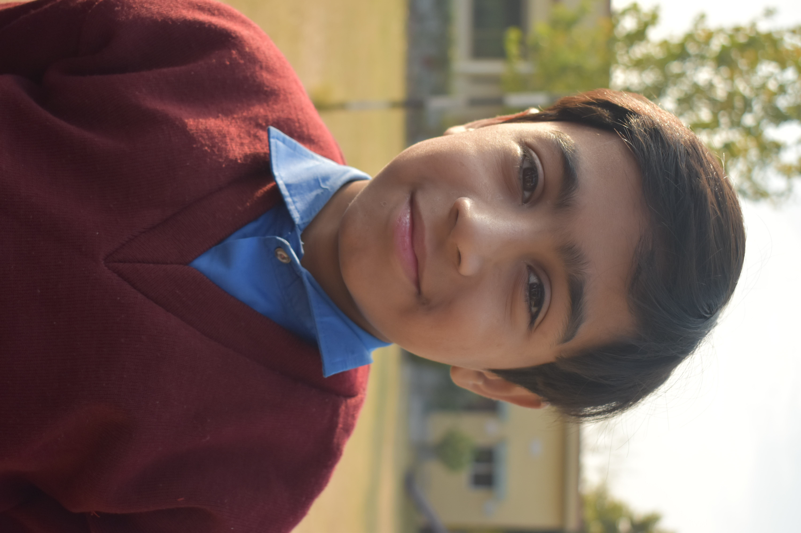

Sikander

Meet Sikander: A Brave 10-Year-Old from Rawalpindi Sikander is a 10-year-old boy from Rawalpindi, Pakistan, whose life has been filled with more pain and sorrow than most can imagine. Born into a poor family, Sikander has faced hardships from the moment he entered this world. His father, a factory worker, struggles to earn enough to provide for the family, and his mother, who works tirelessly as a maid, has never been able to give Sikander the love and care he truly deserves. When Sikander was just 6 years old, tragedy struck. His father was severely injured in a workplace accident and could no longer work. His family’s income disappeared overnight, leaving them to survive on meager savings and the occasional help from neighbors. With no income and no one to turn to, Sikander's mother fell into depression, unable to care for her children as she once had. The family’s situation worsened, and they were forced to move into a small, dilapidated home in one of Rawalpindi's poorest neighborhoods. Despite the hardships, Sikander is a bright and resilient child. He has always dreamed of becoming a teacher, a profession he believes will help him escape the cycle of poverty and give back to his community. But Sikander’s dream seems out of reach. Without money to pay for school fees or buy the basic supplies, Sikander has never set foot in a classroom. He spends his days running errands for neighbors and doing odd jobs just to help his mother make ends meet. His life has been one of constant struggle, and the weight of his circumstances has taken a toll on him. Sikander has witnessed violence and abuse in his community, and he has had to grow up far too quickly. Yet, through all the suffering, he has never lost his hope. He holds on to the dream that one day he will have the chance to go to school, to learn, and to fulfill his purpose in life. Despite his bright mind and strong will, Sikander is not immune to the effects of trauma. The stress of watching his mother suffer, coupled with the harsh realities of life in a poverty-stricken area, has left him emotionally scarred. He often stays up late at night, worrying about his family’s future, wondering if things will ever get better. How You Can Help Sikander Sikander’s story is not just one of hardship—it is a story of resilience and hope. But hope alone is not enough. Sikander needs your help to change his life. For just a small contribution, you can give Sikander the opportunity to attend school, receive the education he deserves, and pursue his dream of becoming a teacher. Your donation will help cover his school fees, books, and basic supplies, giving him the chance to break free from the chains of poverty. Every day, Sikander dreams of a better future, but he cannot do it alone. With your support, Sikander can start his journey towards a brighter tomorrow. He can escape the trauma of his past, find hope in education, and become the teacher he has always wanted to be. Together, we can help Sikander rise above his circumstances and give him the chance to heal, grow, and build a better life for himself and his family.